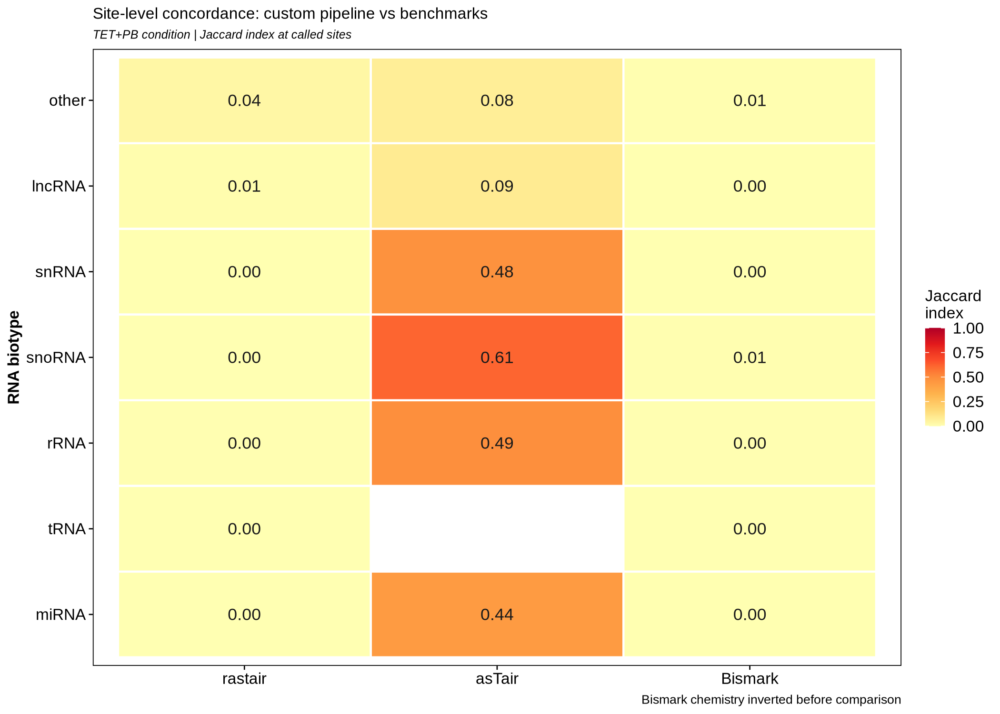
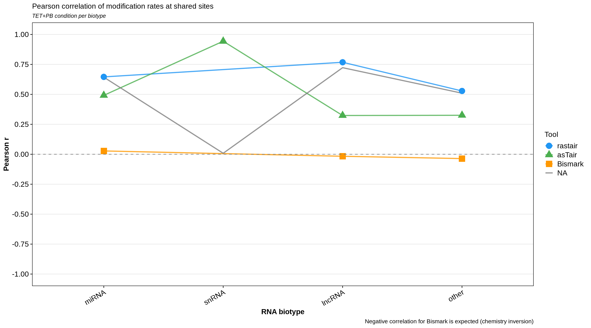
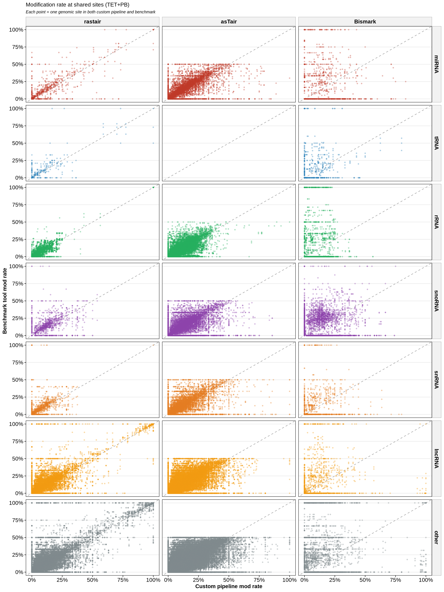
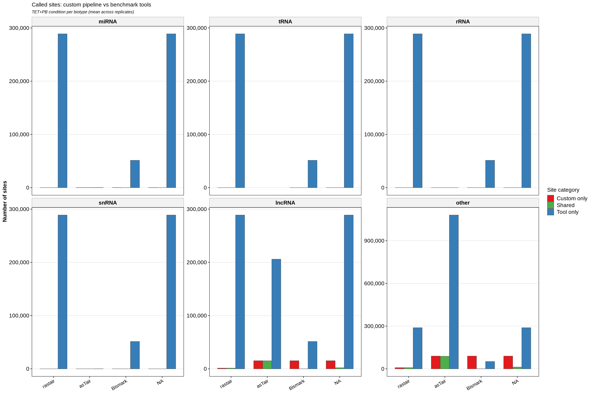
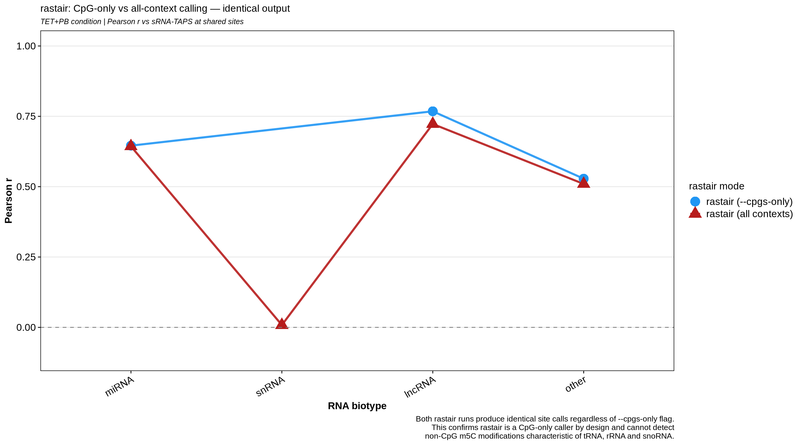

sRNA-TAPS was compared against three established methylation analysis tools — rastair, asTair, and Bismark — to evaluate site-level concordance, modification rate correlation, and small RNA biotype coverage.
Most methylation callers were designed for DNA or for long, abundant RNA species. Applying them to small RNA introduces three systematic problems:
Designed for TAPS data but optimised for DNA methylation calling. Lacks biotype-aware splitting and uses fixed coverage thresholds inappropriate for short RNA species.
Supports RNA TAPS but does not distinguish between RNA biotypes. Applies uniform calling parameters across miRNA, tRNA, and rRNA — which have fundamentally different coverage profiles and multi-mapping characteristics.
Built for bisulfite sequencing where unmodified C converts to T. The signal direction is inverted relative to TAPS — modified C stays as C in bisulfite but converts to T in TAPS. Bismark results must be inverted for comparison.
sRNA-TAPS addresses all three limitations — biotype-resolved calling with per-biotype coverage thresholds, TAPS-native C→T logic, fractional multi-mapper weighting, and a three-layer SNP filter applied upstream of any counting.
Key design differences between sRNA-TAPS and the three benchmark tools:
sRNA-TAPS calls were compared against rastair, asTair, and Bismark across all RNA biotypes in HEK293 and Caco2 cell lines. Results show site-level concordance (Jaccard index), modification rate correlation at shared sites (Pearson r), and called site overlap.
Note on Bismark: Bismark uses bisulfite chemistry where the signal direction is inverted — unmodified C converts to T rather than modified C. Bismark mod_rates are therefore 1 − rate before comparison. Negative or near-zero Pearson r for Bismark is expected and confirms correct chemistry inversion.

Jaccard index between sRNA-TAPS called sites and each benchmark tool, per biotype. Higher values indicate greater overlap in called positions.

Pearson r of modification rates at sites called by both sRNA-TAPS and each benchmark tool. rastair and asTair show strong positive correlation; Bismark is near zero or negative (expected — chemistry inversion).

Scatter plot of per-site modification rates at positions called by both sRNA-TAPS and each benchmark tool. Points on the diagonal indicate agreement between pipelines.

Number of sites called exclusively by sRNA-TAPS, exclusively by each benchmark tool, and shared between both. sRNA-TAPS recovers a distinct set of high-confidence small RNA m5C sites.
rastair was originally designed and validated for genome-wide DNA methylation calling, where CpG is the dominant and biologically most relevant methylation context. In that setting, CpG-only calling is entirely appropriate and the tool performs excellently.
However, when applied to small RNA — as we do here for benchmarking purposes — this design choice becomes a fundamental mismatch. The most biologically relevant m5C sites in small RNA occur predominantly in non-CpG contexts: C34 and C38 in tRNA wobble positions (CHH/CHG), internal positions in rRNA, and seed-region cytosines in miRNA are rarely CpG dinucleotides.
To confirm this, we ran rastair twice on the same BAMs — once with --cpgs-only and once without. The outputs were identical: the same sites, the same modification rates, the same Pearson correlation with sRNA-TAPS. This demonstrates that rastair's CpG restriction is implemented at the core calling level, not just as a post-processing filter, and cannot be bypassed via command-line flags.
This is not a criticism of rastair — it is working exactly as designed for its intended use case. It is rather a demonstration of why a dedicated small RNA pipeline is needed. sRNA-TAPS is currently the only pipeline that calls m5C in all cytosine contexts across all small RNA biotypes.

Pearson r between sRNA-TAPS and rastair at shared sites, comparing the --cpgs-only run against the all-context run. The two lines are completely overlapping, confirming rastair produces identical output regardless of context flag.
Using the synthetic test dataset included with sRNA-TAPS, the pipeline correctly recovers seeded m5C positions with high signal-to-noise ratio:
The >40-fold enrichment between treated and untreated conditions at seeded m5C positions confirms accurate TAPS signal detection. See the tutorial for step-by-step instructions to reproduce these results.